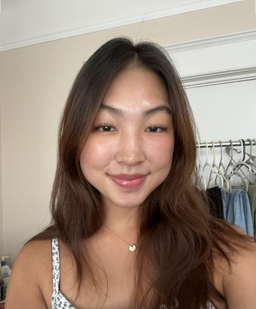

Hey! I'm Jacky Wijaya, a senior at the University of San Francisco, eagerly anticipating my graduation in December 2023. As a computer science major with a minor in design, I've discovered my unique niche where I can merge my technical expertise with my creative instincts. This synergy has ignited a deep passion for UI/UX design, a field where I can seamlessly blend the realms of art and technology. Crafting interactive elements that enhance user experiences while retaining control over their design is where my heart lies. I'm genuinely excited about the endless possibilities in this dynamic field, and my enthusiasm fuels my desire to keep learning and growing.